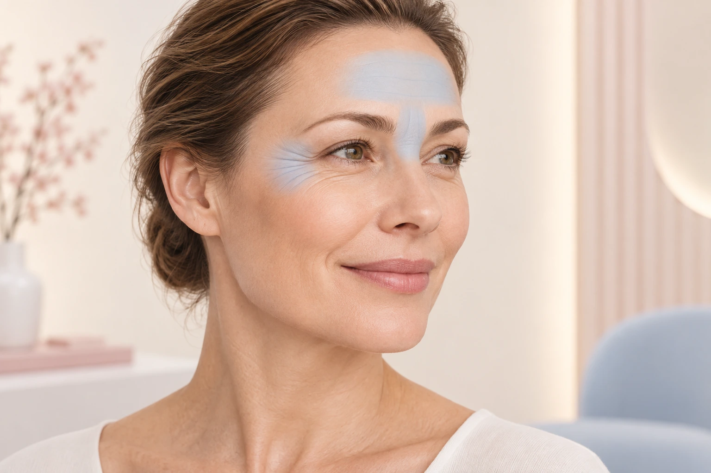
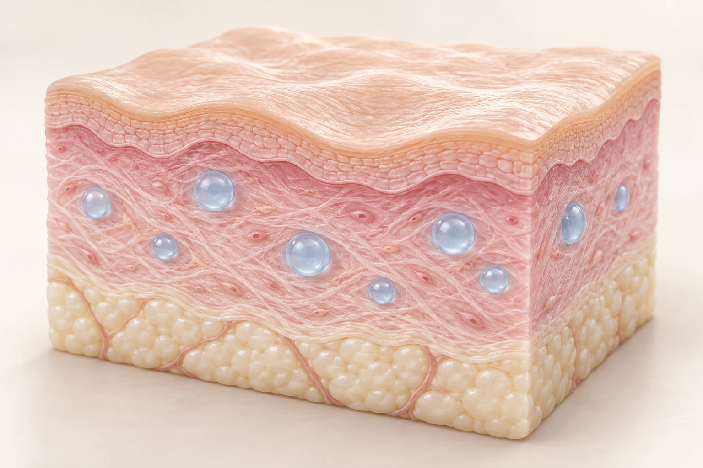
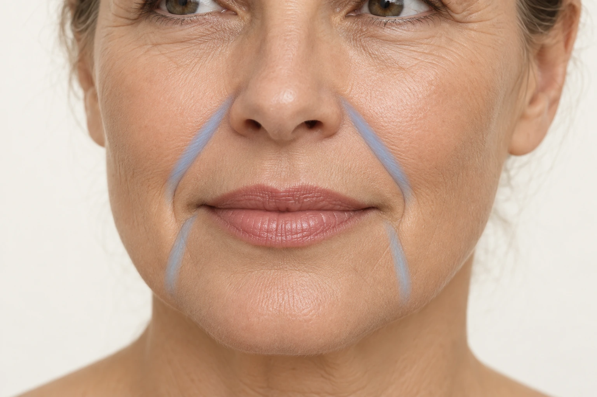
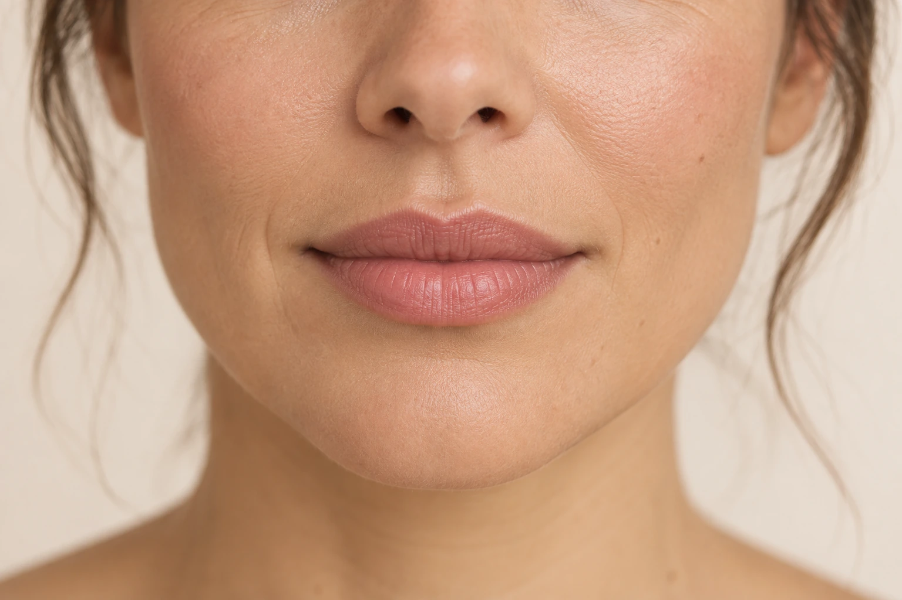

Mimikfalten
BotulinumtoxinBehandlungsmöglichkeiten für Stirn, Zornesfalte und Augenregion – individuell abgestimmt.
Mehr erfahrenNatürlich und individuell.
Behandlung, Möglichkeiten und Risiken kennenlernen · QR-Code scannen

Behandlungsmöglichkeiten für Stirn, Zornesfalte und Augenregion – individuell abgestimmt.
Mehr erfahren
Feuchtigkeit und Hautstruktur: Was eine Behandlung mit Hyaluronsäure leisten kann.
Mehr erfahren
Informationen zur Behandlung von Nasolabial- und Marionettenfalten.
Mehr erfahren
Lippenform, Kontur und Volumen – passend zu Ihren Gesichtszügen.
Mehr erfahren